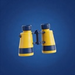
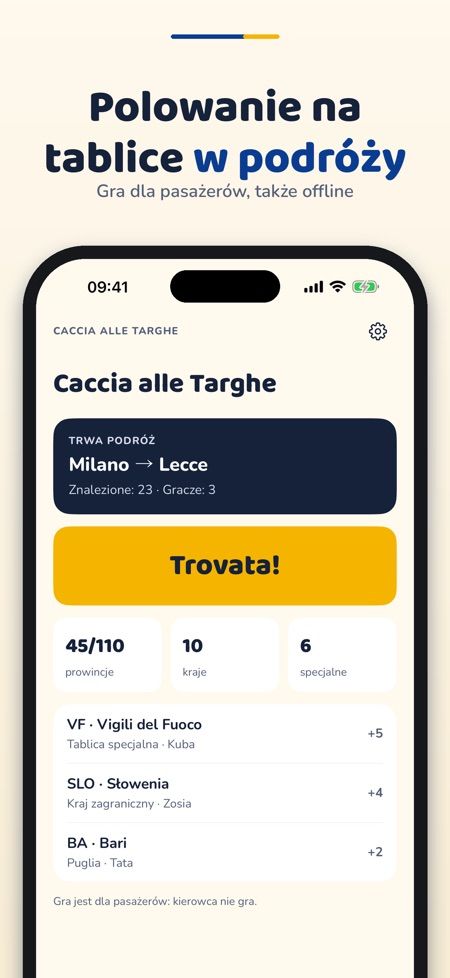
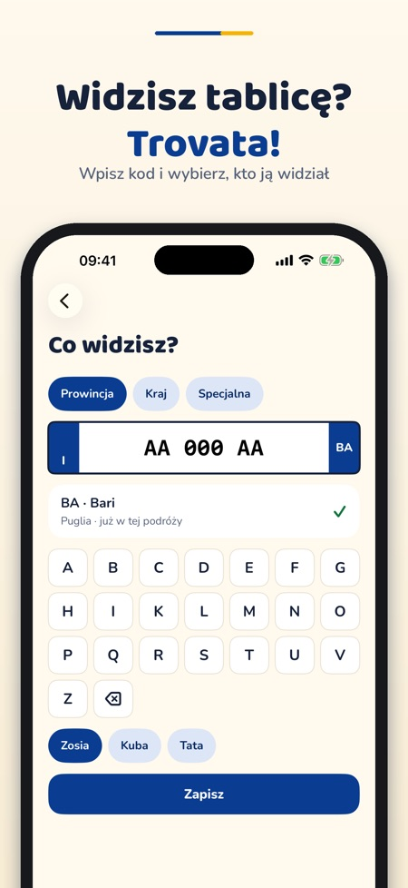
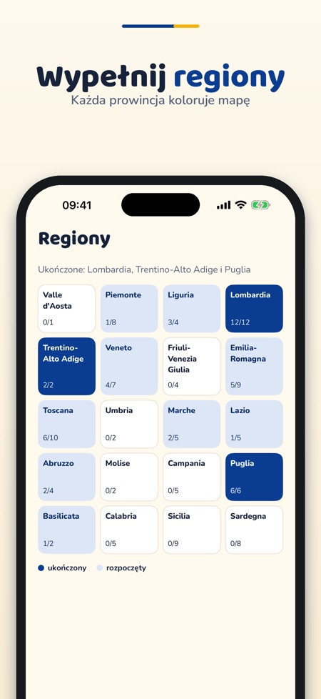

Gra w tablice w podróży. Gra na podróż samochodem: zbieraj włoskie prowincje, kantony Szwajcarii, departamenty Francji i kody krajów, wypełniaj regiony i rywalizuj z rodziną.



Caccia alle Targhe to gra dla pasażerów w czasie podróży samochodem: zbieraj kody z tablic, wypełniaj regiony i rywalizuj z rodziną.
Włoskie prowincje, jedna podróż i dwóch graczy są dostępne bez zakupu. Jednorazowy zakup odblokowuje pakiety Szwajcaria i Francja, tablice specjalne, kraje, nieograniczone podróże, do sześciu graczy i quiz. Bez subskrypcji.
Gra jest dla pasażerów, nie dla kierowcy. Zapisywane są tylko kody (prowincja, kraj, kategoria), nigdy pełne numery tablic.